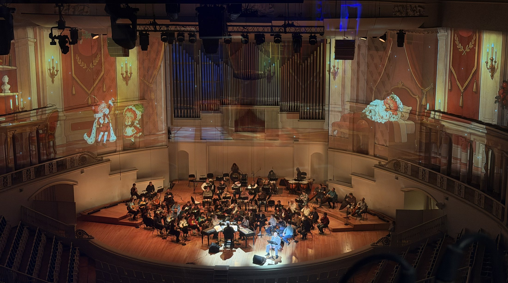
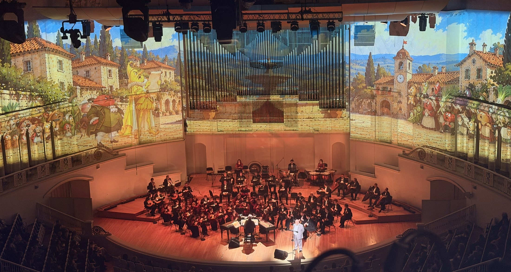
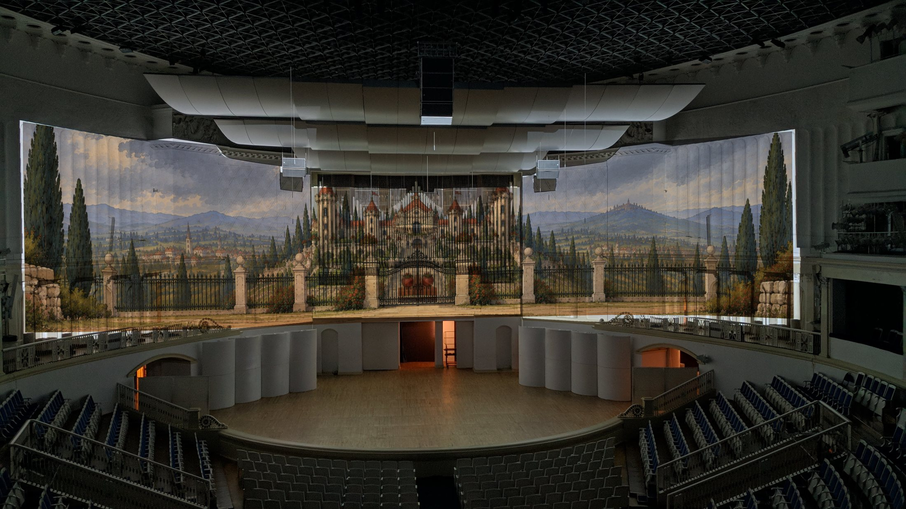
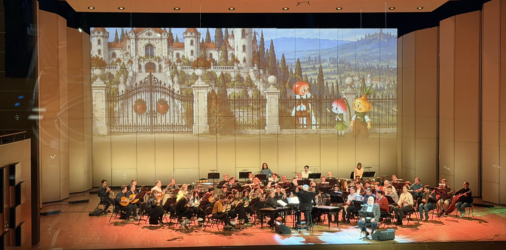

Приключения Чиполлино
Оркестр Осипова — детям
24 октября 2026 · Концертный зал имени П. И. Чайковского
25 октября 2026 · Филармония-2
Видеохудожник — Екатерина Чебышева
24 октября 2026 · Концертный зал имени П. И. Чайковского
25 октября 2026 · Филармония-2
Видеохудожник — Екатерина Чебышева

О проекте
Создание художественного видеоконтента для музыкально-литературного концерта «Приключения Чиполлино» по сказке Джанни Родари.
Визуальное оформление выполнено в стилистике книжной иллюстрации и сопровождает развитие сюжета, создавая сказочное пространство на сцене.
Особенностью проекта стала разработка видеоконтента с учётом архитектуры Концертного зала имени П. И. Чайковского. Изображения были подготовлены для проекции на архитектурные поверхности зала, а затем адаптированы под сценический формат второй площадки — Филармонии-2.



Приключения Чиполлино · 2026
Все проекты →